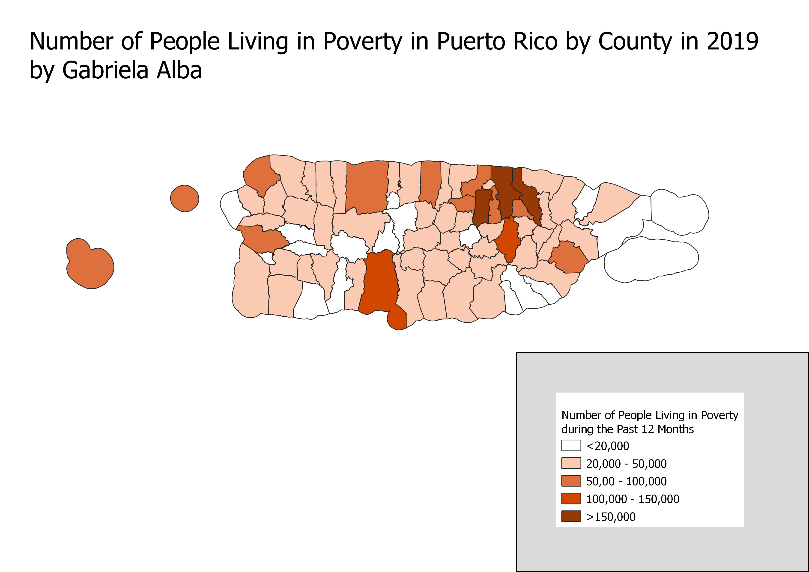

Homework 7: Census data choropleth
Gabriela Alba
This map depicts the number of people who have experienced poverty in the year 2019 in Puerto Rico by county. The intensity of the orange color that fills each county represents the number of people in that county who experienced poverty in the past 12 months according to the Census Bureau's poverty threshold. The map depicts that there are a higher number of people living in poverty near the cities of San Juan and Ponce. However, these cities are one of the two most populated cities in Puerto Rico indicating that this map may be skewed by the total population of people in each county.

Data used for this project
Link to cleaned CSV dataset
Link to geoJSON